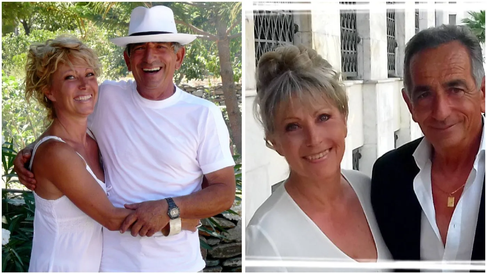
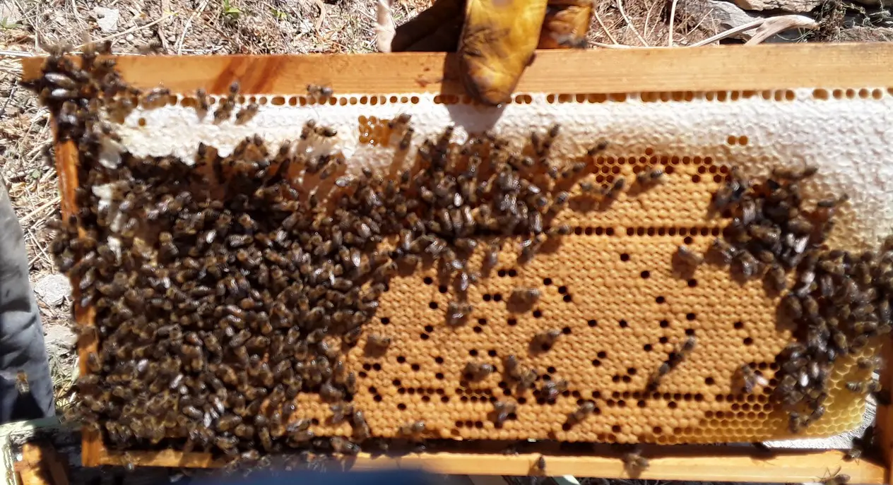

About us
Two lives that met in an olive grove
Geraldine, from Bordeaux, and George, a Tziotis born on Kea and a beekeeper for forty years.
Our story
Going to the end of a dream
I am French, from Bordeaux. After a 17-year business career in the pharmaceutical industry, I created a real estate agency in Arcachon, near Bordeaux. My love for Greece began 50 years ago, and during all those years I shared my life between France and Greece.
I had always had in mind installing myself here permanently — and, as I think one should always go to the end of his dreams, I did.
I love decorating, restoring old furniture, browsing in antique shops. I love sharing a good meal between friends, drinking a good Bordeaux, gardening, making marmalades, photography… well, I am always active.
I have had the chance to meet George, who was born on the island of Kea — so he is a Tziotis. He is a third-generation beekeeper. Together we carefully enlarged and decorated our second house at Petrothalassa, 6 km from Ermioni. It is located in a prime spot that has remained wild, and we share the pleasure of receiving.
George is a history buff and, of course, a beekeeper. Unfortunately he speaks neither English nor French. But in Greece we are very attached to the word filoxenia — and then everything is easier.

